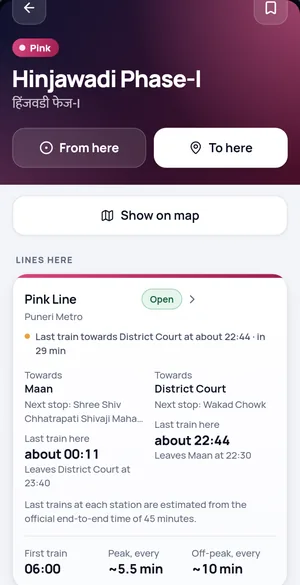

Pune Metro stations
50 stations, 44 open. Search by name or area, or filter by line.
All stations
PCMC
पीसीएमसीPimpri railway station · 713 m
Sant Tukaram Nagar
संत तुकाराम नगरKasarwadi railway station · 896 m
Nashik Phata (Bhosari)
नाशिक फाटा (भोसरी)Kasarwadi railway station · 157 m
Kasarwadi
कासारवाडीPhugewadi
फुगेवाडीDapodi
दापोडीDapodi railway station · 282 m
Bopodi
बोपोडीKhadki
खडकीRange Hill
रेंज हिलShivaji Nagar
शिवाजीनगरPataleshwar Cave Temple · 572 m
District Court
जिल्हा न्यायालय पुणेPataleshwar Cave Temple · 720 m
Kasba Peth
कसबा पेठLal Mahal · 429 m
Mahatma Phule Mandai
महात्मा फुले मंडईLal Mahal · 649 m
Swargate
स्वारगेटMahalaxmi Mandir, Sarasbaug · 348 m
Vanaz
वनाझAnand Nagar
आनंद नगरYashwantrao Chavan Natyagruha · 784 m
Paud Phata
पौड फाटाJoshi's Museum of Miniature Railways · 831 m
S.N.D.T. College
एसएनडीटी कॉलेजSNDT Women's University · 222 m
Garware College
गरवारे महाविद्यालयGarware College · 83 m
Deccan Gymkhana
डेक्कन जिमखानाOmkareshwar Mandir · 626 m
Chhatrapati Sambhaji Udyan
छत्रपती संभाजी उद्यानPataleshwar Cave Temple · 825 m
PMC
पुणे महानगरपालिका भवनShaniwar Wada · 429 m
R.T.O Pune
आर.टी.ओ. पुणेPune Station bus stand · 858 m
Pune Railway Station
पुणे रेल्वे स्थानकPune Junction railway station · 233 m
Ruby Hall Clinic
रुबी हॉल क्लिनिकPune Junction railway station · 553 m
Bund Garden
बंड गार्डनOsho International Meditation Resort · 672 m
Yerwada
येरवडाBund Garden · 480 m
Kalyani Nagar
कल्याणी नगरThe KOPA · 711 m
Ramwadi
रामवाडीAga Khan Palace · 897 m
Maan
माणMaan - MIDC Circle Phase-II
माण - एमआयडीसी सर्कल फेज-IIMaan Bus Depot
माण बस डेपोHinjawadi Phase-II Circle-II
हिंजवडी फेज-II सर्कल-IIHinjawadi Phase-II Circle-I
हिंजवडी फेज-II सर्कल-IPadmabhushan Chowk
पद्मभूषण चौकGrand highstreet · 254 m
Shree Shiv Chhatrapati Shivaji Maharaj Chowk Hinjawadi
श्री शिव छत्रपती शिवाजी महाराज चौक हिंजवडीE-Square Xion · 771 m
Hinjawadi Phase-I
हिंजवडी फेज-IE-Square Xion · 212 m
Wakad Chowk
वाकड चौकShree Shiv Chhatrapati Sports Complex Mahalunge
श्री शिवछत्रपती क्रीडा संकुल महाळुंगेShree Shiv Chhatrapati Sports Complex, Balewadi · 661 m
Mitcon Balewadi
मिटकॉन बालेवाडीR K Laxman Museum · 534 m
R K Laxman Museum Balewadi
आर. के. लक्ष्मण संग्रहालय बालेवाडीR K Laxman Museum · 159 m
Balewadi High Street
बालेवाडी हाय स्ट्रीटR K Laxman Museum · 529 m
Balewadi Phata
बालेवाडी फाटाJupiter Hospital · 678 m
Baner Gaon
बाणेर गावJupiter Hospital · 872 m
Baner Pashan Link Road
बाणेर पाषाण लिंक रोडAundh
औंधIISER Pune · 558 m
Sakal Nagar
सकाळ नगरSavitribai Phule Pune University · 871 m
Savitribai Phule Pune University
सावित्रीबाई फुले पुणे विद्यापीठChaturshrungi Mandir · 390 m
Bhosalenagar - RBI
भोसलेनगर - आरबीआयThe Pavillion · 801 m
Agriculture College
कृषी महाविद्यालयSawai Gandharva Smarak · 446 m
No station matches. Try part of the name, like “Shivaji” or “Hinjawadi”.
By line
Pink Line
- Maan
- Maan - MIDC Circle Phase-II
- Maan Bus Depot
- Hinjawadi Phase-II Circle-II
- Hinjawadi Phase-II Circle-I
- Padmabhushan Chowk
- Shree Shiv Chhatrapati Shivaji Maharaj Chowk Hinjawadi
- Hinjawadi Phase-I
- Wakad Chowk
- Shree Shiv Chhatrapati Sports Complex Mahalunge
- Mitcon Balewadi
- R K Laxman Museum Balewadi
- Balewadi High StreetNot open yet
- Balewadi PhataNot open yet
- Baner GaonNot open yet
- Baner Pashan Link RoadNot open yet
- Aundh
- Sakal Nagar
- Savitribai Phule Pune University
- Bhosalenagar - RBINot open yet
- Agriculture College
- Shivaji NagarPurple LineNot open yet
- District CourtPurple LineAqua Line
 Pune Metro Guide app · free on Android and iPhone
Pune Metro Guide app · free on Android and iPhone
Explore stations and plan your next journey with the app.
Check a station's lines, first and last trains on your phone, and set a reminder so you don't miss the last one. It works offline too.
- Last-train reminder
- Nearest station
- Works offline

What's in the app · Unofficial, like this website.
